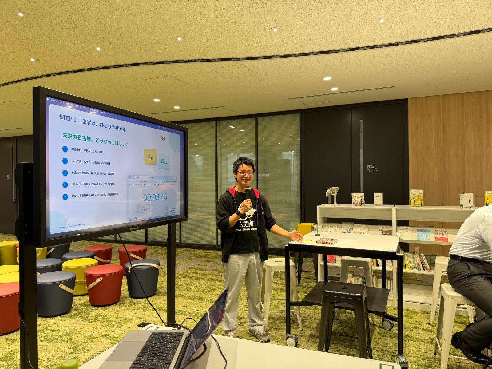
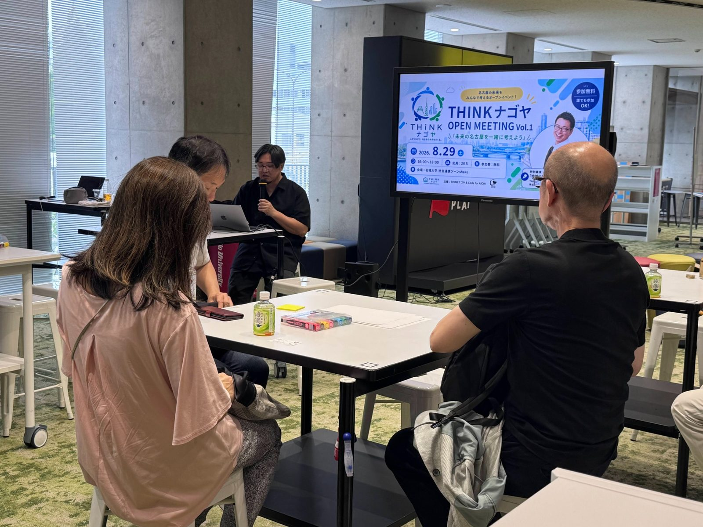
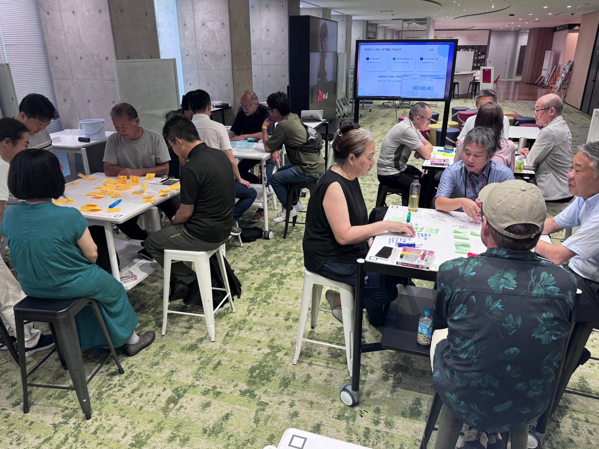
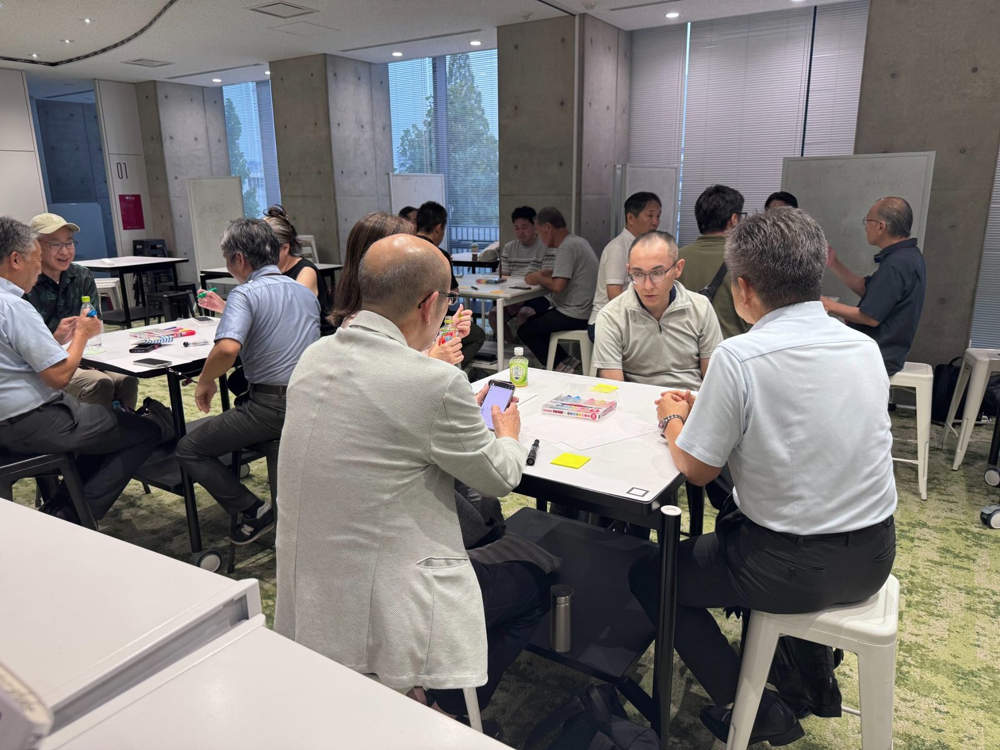
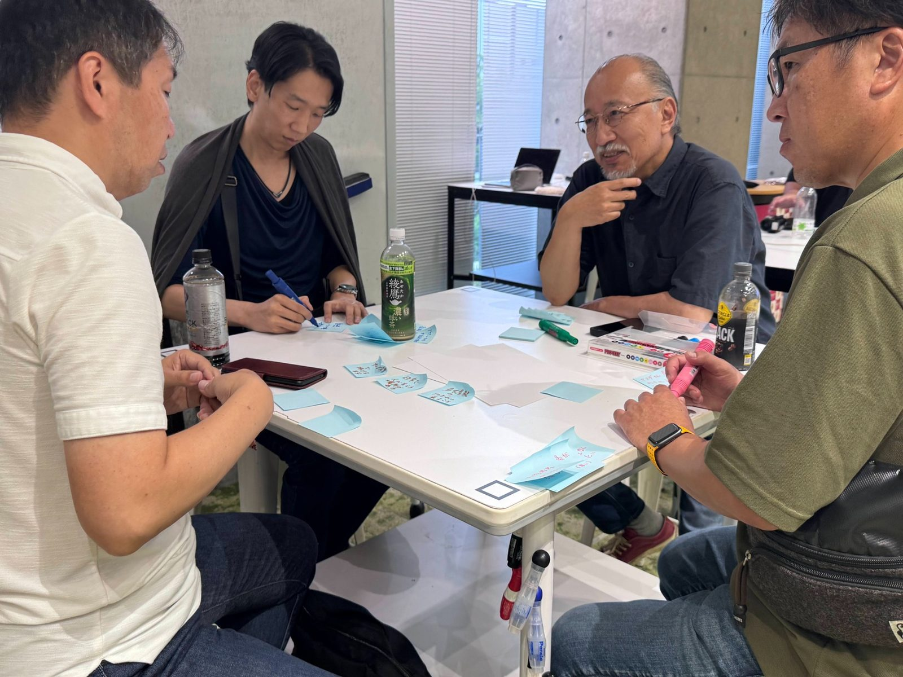
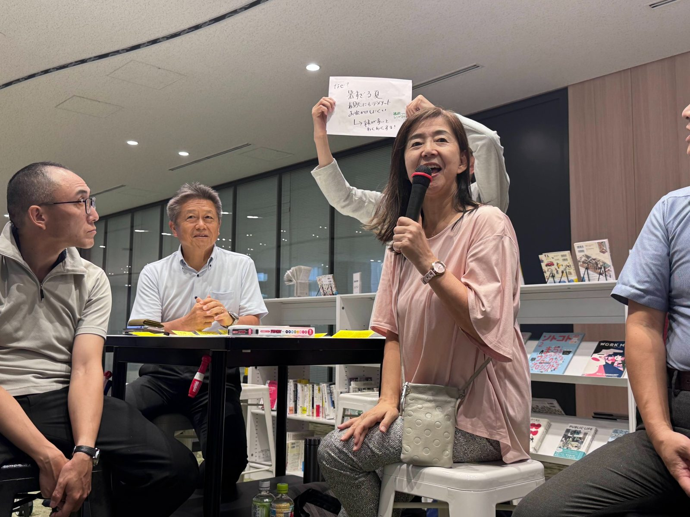
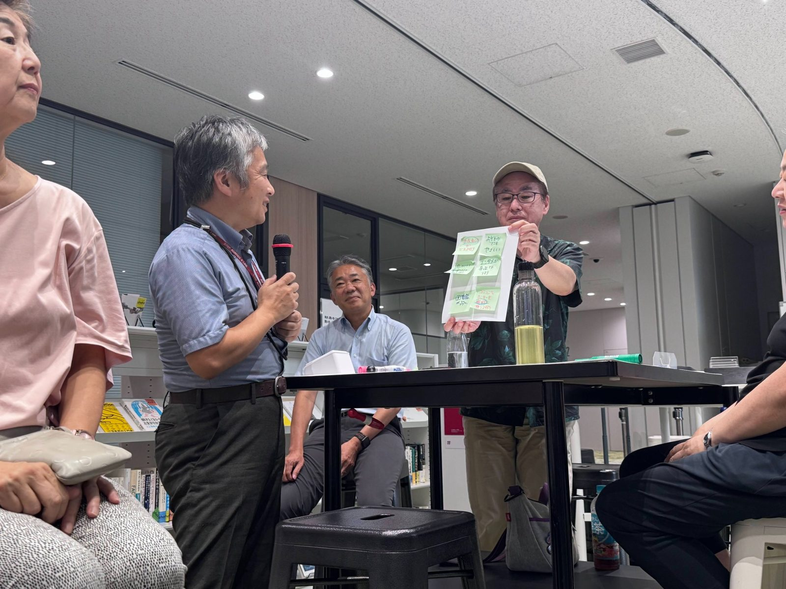

未来の名古屋を、開かれた場で考える
2026年8月29日、名城大学 社会連携ゾーン「shake」にて、「THINKナゴヤ OPEN MEETING Vol.1」を開催しました。
THINKナゴヤは、名古屋市の未来を考える有志の集まりです。これまで専門家を招いた勉強会やメンバー同士の議論を重ねながら、名古屋の中長期的な都市像や市政のあり方について考えてきました。
今回のOPEN MEETINGは、その議論をメンバーだけにとどめず、さまざまな立場の参加者と一緒に「未来の名古屋」を考える場として開催しました。

THINKナゴヤから、名古屋の未来に向けた政策提言
前半では、THINKナゴヤがこれまでの勉強会や議論を通じてまとめてきた、名古屋の未来に向けた政策提言を紹介しました。
少子高齢化や人口減少、若い世代から選ばれる都市づくり、産業・文化・都市資産の活用、持続可能な行政経営など、これから名古屋が向き合っていくテーマを共有しました。


特別講演「地域に関わることは、未来への投資」
続いて、THINKナゴヤメンバーでもある株式会社官民連携研究所・晝田浩一郎さんによる特別講演を行いました。
講演では、地域づくりを「誰かがやってくれるもの」ではなく、自分たち自身が関わるものとして捉えることの大切さについて、さまざまな視点からお話しいただきました。
地域の未来は、行政だけでつくられるものではありません。市民や企業など、それぞれが地域に関心を持ち、小さくても行動を起こしていく。その積み重ねが、これからの街をつくっていく力になります。
みんなで考える「未来の名古屋」
ワークショップのテーマは、「未来の名古屋、どうなってほしい？」。
まずは一人ひとりがアイデアを出し、その後グループで意見を共有。さまざまなアイデアを掛け合わせながら、それぞれのグループが考える「未来の名古屋」をまとめ、最後に全体で発表しました。
「否定するのではなく、アイデアを広げる」。そんな雰囲気の中で話し合いが進み、4つのグループから、それぞれ異なる視点の未来像が生まれました。



市民が自分たちで街をつくれる名古屋
市民自身が地域について考え、活動できる環境を整え、外から来た人も入りやすい街へ。
「名古屋ローカル」をもっと誇れる街へ
すでにある魅力や文化を見つめ直し、“名古屋ローカル”として発信していく街へ。
緑を増やして、歩きたくなる名古屋へ
街中の緑や木陰を増やし、暑さ対策と回遊性を両立する都市空間へ。
人と企業が集まる「首都・オアシス名古屋」
人が集まり、企業が集まり、快適に過ごせる環境もある名古屋へ。

アイデアを「話して終わり」にしない
今回のOPEN MEETINGは、完成した答えを発表する場ではなく、さまざまな立場の人が一緒になって、名古屋の未来を考えるためのスタート地点です。
ワークショップで生まれた意見やアイデアも、今回だけで終わらせるのではなく、今後のTHINKナゴヤでの議論や活動につなげていきます。
行政だけでも、企業だけでも、市民だけでもない。それぞれの立場から名古屋について考え、つながり、できることから動いていく。